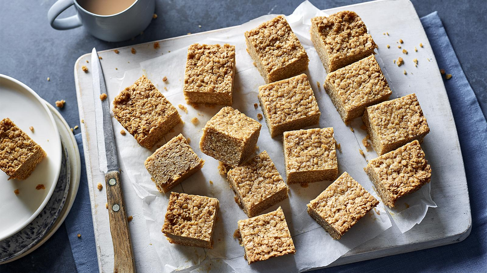

Flapjack Bites
Adapted from the recipe Easy Flapjacks by Lorraine Pascale, BBC Good Food.

Description
Classic, chewy and good for your soul, Lorraine Pascale’s easy flapjacks are simple to make and hard to beat!
Each serving provides 318 kcal, 3.5g protein, 43g carbohydrates (of which 25.5g sugars), 14g fat (of which 8g saturates), 2.5g fibre and 0.1g salt.
Ingredients
- 175g/6oz butter
- 175g/6oz golden syrup
- 175g/6oz light muscovado sugar
- 350g/12oz porridge oats
- ½ unwaxed lemon, finely grated zest only (optional)
- pinch ground ginger (optional)
Steps
- Preheat the oven to 150C/130C Fan/Gas 2 and line a 20cm/8in square baking tin with baking paper.
- Melt the butter in a medium pan over a low heat. Dip a brush in the butter and brush the baking tin with a little bit of it. Add the golden syrup and sugar to the butter and heat gently. Once the sugar is dissolved and the butter is melted, remove the pan from the heat and stir in the porridge oats, lemon zest and ginger.
- Pack the mixture into the baking tin and squash down. Bake in the oven for 40 minutes.
- Once cooked, remove from the oven, leave to cool for 15 minutes, then turn out onto a chopping board and cut into squares.